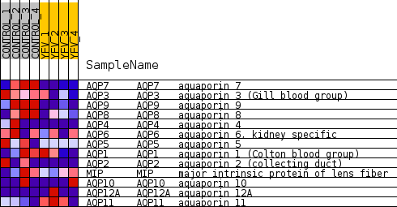
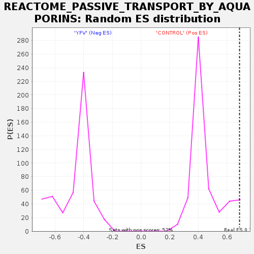

Profile of the Running ES Score & Positions of GeneSet Members on the Rank Ordered List
| Dataset | MATRIZ_GSE99081_collapsed_to_symbols.gsea_CLASE_99081.cls#CONTROL_versus_YFV |
| Phenotype | gsea_CLASE_99081.cls#CONTROL_versus_YFV |
| Upregulated in class | CONTROL |
| GeneSet | REACTOME_PASSIVE_TRANSPORT_BY_AQUAPORINS |
| Enrichment Score (ES) | 0.68750286 |
| Normalized Enrichment Score (NES) | 1.523388 |
| Nominal p-value | 0.04389313 |
| FDR q-value | 0.7923642 |
| FWER p-Value | 1.0 |
| SYMBOL | TITLE | RANK IN GENE LIST | RANK METRIC SCORE | RUNNING ES | CORE ENRICHMENT | |
|---|---|---|---|---|---|---|
| 1 | AQP7 | aquaporin 7 | 322 | 0.933 | 0.2061 | Yes |
| 2 | AQP3 | aquaporin 3 (Gill blood group) | 1263 | 0.581 | 0.2887 | Yes |
| 3 | AQP9 | aquaporin 9 | 1269 | 0.579 | 0.4286 | Yes |
| 4 | AQP8 | aquaporin 8 | 1306 | 0.571 | 0.5645 | Yes |
| 5 | AQP4 | aquaporin 4 | 1440 | 0.542 | 0.6875 | Yes |
| 6 | AQP6 | aquaporin 6, kidney specific | 4290 | 0.221 | 0.5653 | No |
| 7 | AQP5 | aquaporin 5 | 4689 | 0.184 | 0.5854 | No |
| 8 | AQP1 | aquaporin 1 (Colton blood group) | 5819 | 0.090 | 0.5377 | No |
| 9 | AQP2 | aquaporin 2 (collecting duct) | 6553 | 0.035 | 0.5009 | No |
| 10 | MIP | major intrinsic protein of lens fiber | 6726 | 0.025 | 0.4963 | No |
| 11 | AQP10 | aquaporin 10 | 10019 | -0.026 | 0.2999 | No |
| 12 | AQP12A | aquaporin 12A | 10395 | -0.051 | 0.2890 | No |
| 13 | AQP11 | aquaporin 11 | 12948 | -0.294 | 0.2028 | No |

